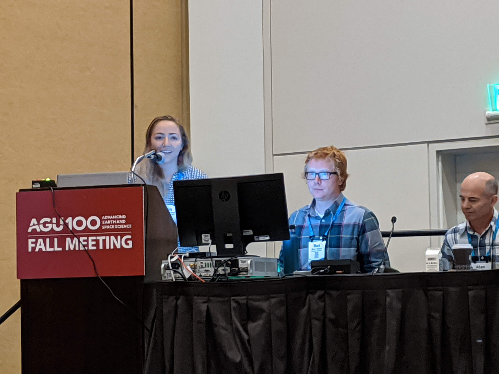
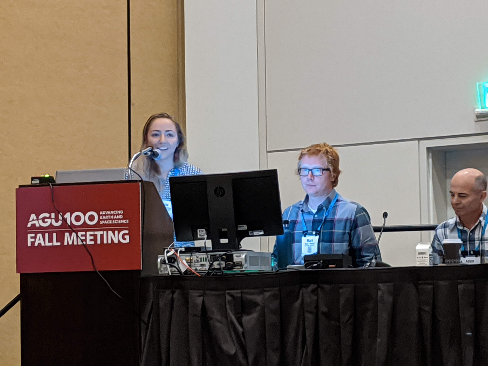

Cassie Lumbrazo
Graduate Student
Cassie is originally from New York and received a B.S. in both Environmental Engineering and Applied Mathematics and Statistics from Clarkson University in Potsdam, NY. Prior to UW, Cassie participated in a project which supported sustainable management of the Great Lakes. This experience exposed Cassie to field work in hydrology and motivated her to continue research in environmental protection and management. Cassie spent a year with the U.S. Army Corps of Engineers at the Cold Regions Research and Engineering Laboratory (CRREL) in New Hampshire. There, she worked with a computational modeling group to improve snowpack monitoring methods and sea-ice forecasting models. Cassie is continuing snow science work in her graduate studies by improving physical measurements and forest snow retention models. On most weekends, you can find Cassie deep in the mountains enjoying splitboarding, hiking, and backpacking. Additionally, she dabbles in biking, swimming, and professional dog petting. Through her experiences, she has developed a strong advocacy for sustainability and environmental stewardship.
 
